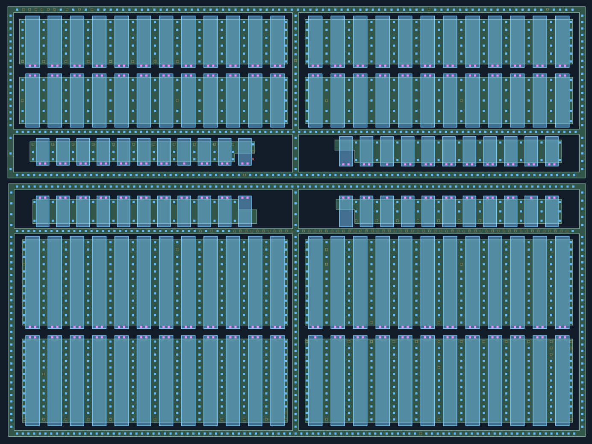
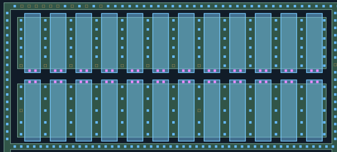
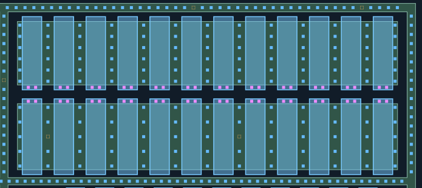
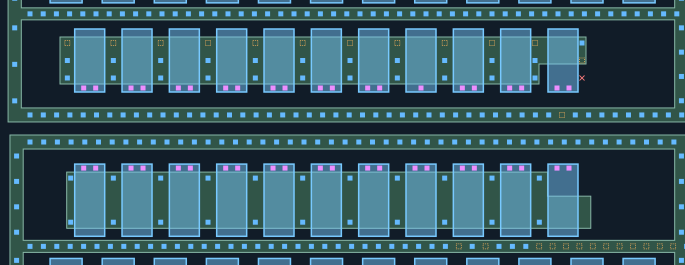
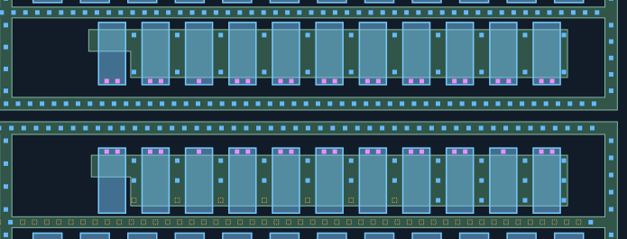
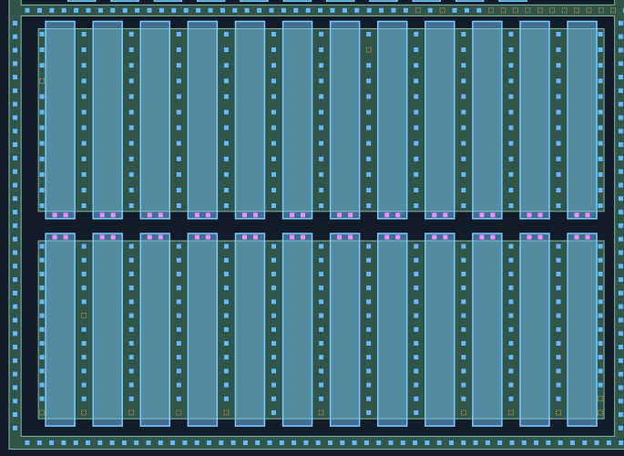
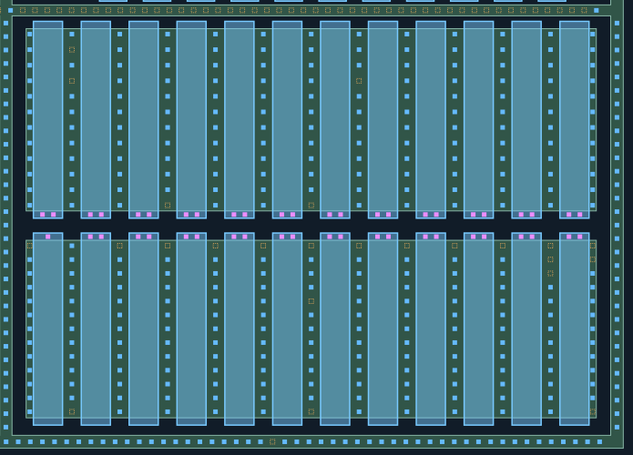

CT材料联合重建复核
蓝色：新增AA接触；紫色：新增POLY接触；灰蓝：既有CT工作快照，保留原分项批准和未知状态，不重复验收。
新孔均有照片观察支持，采用局部材料对应，未使用全幅盲投影。AA/POLY材料未修改。
橙色虚框仅为待查槽位，不计为CT，也不代表实际缺孔。
仅重建下列局部观察支持的孔列；未补齐缺少证据的位置，未画不代表没有孔。
新区域的材料对应仍为AI候选，孔数不是人工确认值。几何检查不是真实工艺DRC，M1归属未知。
整体质量门与防退化检查 ·
匹配与未选择观察记录
中下部140栅CT：源漏／栅端／环联合候选
各排上下端方向来自本组照片AI观察，不套用Q2下端批准；顶部/底部相邻MOS的栅端候选相向。同阵列孔列保持规则相位，弱孔或缺观察不按数量补齐。保留4940工作快照及分项批准边界，不声称原4940孔全是逐孔真值。本组R2_Q1下端CT簇已有历史归属确认，本次两处实测候选与旧簇窗口交叉核对，不重复推翻旧裁决。5条栅目前仅一个强峰，3条边列仍缺可靠孔位；其余位置未按模板补满。
逐孔列数量与待查槽位（0起编号）
- MM-G36-G01: 2 孔；待查槽位 []
- MM-G36-G02: 2 孔；待查槽位 []
- MM-G36-G03: 2 孔；待查槽位 []
- MM-G36-G04: 2 孔；待查槽位 []
- MM-G36-G05: 2 孔；待查槽位 []
- MM-G36-G06: 2 孔；待查槽位 []
- MM-G36-G07: 2 孔；待查槽位 []
- MM-G36-G08: 2 孔；待查槽位 []
- MM-G36-G09: 2 孔；待查槽位 []
- MM-G36-G10: 2 孔；待查槽位 []
- MM-G36-G11: 2 孔；待查槽位 []
- MM-G36-G12: 2 孔；待查槽位 []
- MM-G37-G01: 2 孔；待查槽位 []
- MM-G37-G02: 2 孔；待查槽位 []
- MM-G37-G03: 2 孔；待查槽位 []
- MM-G37-G04: 2 孔；待查槽位 []
- MM-G37-G05: 2 孔；待查槽位 []
- MM-G37-G06: 2 孔；待查槽位 []
- MM-G37-G07: 2 孔；待查槽位 []
- MM-G37-G08: 2 孔；待查槽位 []
- MM-G37-G09: 2 孔；待查槽位 []
- MM-G37-G10: 2 孔；待查槽位 []
- MM-G37-G11: 2 孔；待查槽位 []
- MM-G37-G12: 2 孔；待查槽位 []
- MM-G38-G01: 2 孔；待查槽位 []
- MM-G38-G02: 2 孔；待查槽位 []
- MM-G38-G03: 2 孔；待查槽位 []
- MM-G38-G04: 2 孔；待查槽位 []
- MM-G38-G05: 2 孔；待查槽位 []
- MM-G38-G06: 2 孔；待查槽位 []
- MM-G38-G07: 2 孔；待查槽位 []
- MM-G38-G08: 2 孔；待查槽位 []
- MM-G38-G09: 2 孔；待查槽位 []
- MM-G38-G10: 2 孔；待查槽位 []
- MM-G38-G11: 2 孔；待查槽位 []
- MM-G38-G12: 2 孔；待查槽位 []
- MM-G39-G01: 2 孔；待查槽位 []
- MM-G39-G02: 2 孔；待查槽位 []
- MM-G39-G03: 2 孔；待查槽位 []
- MM-G39-G04: 2 孔；待查槽位 []
- MM-G39-G05: 2 孔；待查槽位 []
- MM-G39-G06: 2 孔；待查槽位 []
- MM-G39-G07: 2 孔；待查槽位 []
- MM-G39-G08: 2 孔；待查槽位 []
- MM-G39-G09: 2 孔；待查槽位 []
- MM-G39-G10: 2 孔；待查槽位 []
- MM-G39-G11: 2 孔；待查槽位 []
- MM-G39-G12: 2 孔；待查槽位 []
- MM-G40-G01: 2 孔；待查槽位 []
- MM-G40-G02: 2 孔；待查槽位 []
- MM-G40-G03: 2 孔；待查槽位 []
- MM-G40-G04: 2 孔；待查槽位 []
- MM-G40-G05: 2 孔；待查槽位 []
- MM-G40-G06: 2 孔；待查槽位 []
- MM-G40-G07: 2 孔；待查槽位 []
- MM-G40-G08: 1 孔；待查槽位 []
- MM-G40-G09: 2 孔；待查槽位 []
- MM-G40-G10: 2 孔；待查槽位 []
- MM-G40-G11: 2 孔；待查槽位 []
- MM-G41-G01: 2 孔；待查槽位 []
- MM-G41-G02: 2 孔；待查槽位 []
- MM-G41-G03: 1 孔；待查槽位 []
- MM-G41-G04: 2 孔；待查槽位 []
- MM-G41-G05: 2 孔；待查槽位 []
- MM-G41-G06: 2 孔；待查槽位 []
- MM-G41-G07: 2 孔；待查槽位 []
- MM-G41-G08: 2 孔；待查槽位 []
- MM-G41-G09: 2 孔；待查槽位 []
- MM-G41-G10: 2 孔；待查槽位 []
- MM-G41-G11: 2 孔；待查槽位 []
- MM-G42-G01: 2 孔；待查槽位 []
- MM-G42-G02: 2 孔；待查槽位 []
- MM-G42-G03: 2 孔；待查槽位 []
- MM-G42-G04: 2 孔；待查槽位 []
- MM-G42-G05: 2 孔；待查槽位 []
- MM-G42-G06: 2 孔；待查槽位 []
- MM-G42-G07: 2 孔；待查槽位 []
- MM-G42-G08: 2 孔；待查槽位 []
- MM-G42-G09: 2 孔；待查槽位 []
- MM-G42-G10: 2 孔；待查槽位 []
- MM-G42-G11: 2 孔；待查槽位 []
- MM-G43-G01: 2 孔；待查槽位 []
- MM-G43-G02: 2 孔；待查槽位 []
- MM-G43-G03: 1 孔；待查槽位 []
- MM-G43-G04: 2 孔；待查槽位 []
- MM-G43-G05: 2 孔；待查槽位 []
- MM-G43-G06: 2 孔；待查槽位 []
- MM-G43-G07: 2 孔；待查槽位 []
- MM-G43-G08: 2 孔；待查槽位 []
- MM-G43-G09: 2 孔；待查槽位 []
- MM-G43-G10: 1 孔；待查槽位 []
- MM-G43-G11: 2 孔；待查槽位 []
- MM-G44-G01: 2 孔；待查槽位 []
- MM-G44-G02: 2 孔；待查槽位 []
- MM-G44-G03: 2 孔；待查槽位 []
- MM-G44-G04: 2 孔；待查槽位 []
- MM-G44-G05: 2 孔；待查槽位 []
- MM-G44-G06: 2 孔；待查槽位 []
- MM-G44-G07: 2 孔；待查槽位 []
- MM-G44-G08: 2 孔；待查槽位 []
- MM-G44-G09: 2 孔；待查槽位 []
- MM-G44-G10: 2 孔；待查槽位 []
- MM-G44-G11: 2 孔；待查槽位 []
- MM-G44-G12: 2 孔；待查槽位 []
- MM-G45-G01: 2 孔；待查槽位 []
- MM-G45-G02: 2 孔；待查槽位 []
- MM-G45-G03: 2 孔；待查槽位 []
- MM-G45-G04: 2 孔；待查槽位 []
- MM-G45-G05: 2 孔；待查槽位 []
- MM-G45-G06: 2 孔；待查槽位 []
- MM-G45-G07: 2 孔；待查槽位 []
- MM-G45-G08: 2 孔；待查槽位 []
- MM-G45-G09: 2 孔；待查槽位 []
- MM-G45-G10: 2 孔；待查槽位 []
- MM-G45-G11: 2 孔；待查槽位 []
- MM-G45-G12: 2 孔；待查槽位 []
- MM-G46-G01: 2 孔；待查槽位 []
- MM-G46-G02: 2 孔；待查槽位 []
- MM-G46-G03: 2 孔；待查槽位 []
- MM-G46-G04: 2 孔；待查槽位 []
- MM-G46-G05: 2 孔；待查槽位 []
- MM-G46-G06: 2 孔；待查槽位 []
- MM-G46-G07: 2 孔；待查槽位 []
- MM-G46-G08: 2 孔；待查槽位 []
- MM-G46-G09: 2 孔；待查槽位 []
- MM-G46-G10: 2 孔；待查槽位 []
- MM-G46-G11: 2 孔；待查槽位 []
- MM-G46-G12: 2 孔；待查槽位 []
- MM-G47-G01: 1 孔；待查槽位 []
- MM-G47-G02: 2 孔；待查槽位 []
- MM-G47-G03: 2 孔；待查槽位 []
- MM-G47-G04: 2 孔；待查槽位 []
- MM-G47-G05: 2 孔；待查槽位 []
- MM-G47-G06: 2 孔；待查槽位 []
- MM-G47-G07: 2 孔；待查槽位 []
- MM-G47-G08: 2 孔；待查槽位 []
- MM-G47-G09: 2 孔；待查槽位 []
- MM-G47-G10: 2 孔；待查槽位 []
- MM-G47-G11: 2 孔；待查槽位 []
- MM-G47-G12: 2 孔；待查槽位 []
- MM-G36-SD01: 5 孔；待查槽位 [5]
- MM-G36-SD02: 5 孔；待查槽位 [5]
- MM-G36-SD03: 5 孔；待查槽位 [5]
- MM-G36-SD04: 5 孔；待查槽位 [5]
- MM-G36-SD05: 5 孔；待查槽位 [5]
- MM-G36-SD06: 5 孔；待查槽位 [5]
- MM-G36-SD07: 5 孔；待查槽位 [5]
- MM-G36-SD08: 5 孔；待查槽位 [5]
- MM-G36-SD09: 6 孔；待查槽位 []
- MM-G36-SD10: 6 孔；待查槽位 []
- MM-G36-SD11: 6 孔；待查槽位 []
- MM-G36-SD12: 6 孔；待查槽位 []
- MM-G36-SD13: 6 孔；待查槽位 []
- MM-G37-SD01: 6 孔；待查槽位 []
- MM-G37-SD02: 6 孔；待查槽位 []
- MM-G37-SD03: 6 孔；待查槽位 []
- MM-G37-SD04: 6 孔；待查槽位 []
- MM-G37-SD05: 6 孔；待查槽位 []
- MM-G37-SD06: 6 孔；待查槽位 []
- MM-G37-SD07: 6 孔；待查槽位 []
- MM-G37-SD08: 6 孔；待查槽位 []
- MM-G37-SD09: 6 孔；待查槽位 []
- MM-G37-SD10: 6 孔；待查槽位 []
- MM-G37-SD11: 6 孔；待查槽位 []
- MM-G37-SD12: 6 孔；待查槽位 []
- MM-G37-SD13: 6 孔；待查槽位 []
- MM-G38-SD01: 4 孔；待查槽位 [2]
- MM-G38-SD02: 5 孔；待查槽位 []
- MM-G38-SD03: 5 孔；待查槽位 []
- MM-G38-SD04: 5 孔；待查槽位 []
- MM-G38-SD05: 5 孔；待查槽位 []
- MM-G38-SD06: 5 孔；待查槽位 []
- MM-G38-SD07: 5 孔；待查槽位 []
- MM-G38-SD08: 4 孔；待查槽位 [2]
- MM-G38-SD09: 5 孔；待查槽位 []
- MM-G38-SD10: 5 孔；待查槽位 []
- MM-G38-SD11: 5 孔；待查槽位 []
- MM-G38-SD12: 5 孔；待查槽位 []
- MM-G38-SD13: 5 孔；待查槽位 []
- MM-G39-SD01: 5 孔；待查槽位 []
- MM-G39-SD02: 4 孔；待查槽位 [2]
- MM-G39-SD03: 5 孔；待查槽位 []
- MM-G39-SD04: 5 孔；待查槽位 []
- MM-G39-SD05: 5 孔；待查槽位 []
- MM-G39-SD06: 5 孔；待查槽位 []
- MM-G39-SD07: 5 孔；待查槽位 []
- MM-G39-SD08: 4 孔；待查槽位 [2]
- MM-G39-SD09: 5 孔；待查槽位 []
- MM-G39-SD10: 5 孔；待查槽位 []
- MM-G39-SD11: 5 孔；待查槽位 []
- MM-G39-SD12: 5 孔；待查槽位 []
- MM-G39-SD13: 5 孔；待查槽位 []
- MM-G40-SD01: 2 孔；待查槽位 [-1]
- MM-G40-SD02: 2 孔；待查槽位 [-1]
- MM-G40-SD03: 2 孔；待查槽位 [-1]
- MM-G40-SD04: 2 孔；待查槽位 [-1]
- MM-G40-SD05: 2 孔；待查槽位 [-1]
- MM-G40-SD06: 2 孔；待查槽位 [-1]
- MM-G40-SD07: 2 孔；待查槽位 [-1]
- MM-G40-SD08: 2 孔；待查槽位 [-1]
- MM-G40-SD09: 2 孔；待查槽位 [-1]
- MM-G40-SD10: 2 孔；待查槽位 [-1]
- MM-G40-SD11: 2 孔；待查槽位 [-1]
- MM-G40-SD12: 1 孔；待查槽位 [0, 1]
- MM-G41-SD02: 2 孔；待查槽位 []
- MM-G41-SD03: 2 孔；待查槽位 []
- MM-G41-SD04: 2 孔；待查槽位 []
- MM-G41-SD05: 2 孔；待查槽位 []
- MM-G41-SD06: 2 孔；待查槽位 []
- MM-G41-SD07: 2 孔；待查槽位 []
- MM-G41-SD08: 2 孔；待查槽位 []
- MM-G41-SD09: 2 孔；待查槽位 []
- MM-G41-SD10: 2 孔；待查槽位 []
- MM-G41-SD11: 2 孔；待查槽位 []
- MM-G41-SD12: 2 孔；待查槽位 []
- MM-G42-SD01: 2 孔；待查槽位 []
- MM-G42-SD02: 2 孔；待查槽位 []
- MM-G42-SD03: 2 孔；待查槽位 []
- MM-G42-SD04: 2 孔；待查槽位 []
- MM-G42-SD05: 2 孔；待查槽位 []
- MM-G42-SD06: 2 孔；待查槽位 []
- MM-G42-SD07: 2 孔；待查槽位 []
- MM-G42-SD08: 2 孔；待查槽位 []
- MM-G42-SD09: 2 孔；待查槽位 []
- MM-G42-SD10: 2 孔；待查槽位 []
- MM-G42-SD11: 2 孔；待查槽位 []
- MM-G43-SD02: 2 孔；待查槽位 [2]
- MM-G43-SD03: 2 孔；待查槽位 [2]
- MM-G43-SD04: 2 孔；待查槽位 [2]
- MM-G43-SD05: 2 孔；待查槽位 [2]
- MM-G43-SD06: 2 孔；待查槽位 [2]
- MM-G43-SD07: 2 孔；待查槽位 [2]
- MM-G43-SD08: 2 孔；待查槽位 [2]
- MM-G43-SD09: 3 孔；待查槽位 []
- MM-G43-SD10: 3 孔；待查槽位 []
- MM-G43-SD11: 3 孔；待查槽位 []
- MM-G43-SD12: 3 孔；待查槽位 []
- MM-G44-SD01: 11 孔；待查槽位 [3]
- MM-G44-SD02: 12 孔；待查槽位 []
- MM-G44-SD03: 12 孔；待查槽位 []
- MM-G44-SD04: 12 孔；待查槽位 []
- MM-G44-SD05: 12 孔；待查槽位 []
- MM-G44-SD06: 12 孔；待查槽位 []
- MM-G44-SD07: 12 孔；待查槽位 []
- MM-G44-SD08: 11 孔；待查槽位 [1]
- MM-G44-SD09: 12 孔；待查槽位 []
- MM-G44-SD10: 12 孔；待查槽位 []
- MM-G44-SD11: 12 孔；待查槽位 []
- MM-G44-SD12: 12 孔；待查槽位 []
- MM-G44-SD13: 12 孔；待查槽位 []
- MM-G45-SD01: 12 孔；待查槽位 []
- MM-G45-SD02: 10 孔；待查槽位 [1, 3]
- MM-G45-SD03: 12 孔；待查槽位 []
- MM-G45-SD04: 11 孔；待查槽位 [11]
- MM-G45-SD05: 12 孔；待查槽位 []
- MM-G45-SD06: 12 孔；待查槽位 []
- MM-G45-SD07: 11 孔；待查槽位 [11]
- MM-G45-SD08: 11 孔；待查槽位 [3]
- MM-G45-SD09: 12 孔；待查槽位 []
- MM-G45-SD10: 12 孔；待查槽位 []
- MM-G45-SD11: 12 孔；待查槽位 []
- MM-G45-SD12: 12 孔；待查槽位 []
- MM-G45-SD13: 12 孔；待查槽位 []
- MM-G46-SD01: 12 孔；待查槽位 [12]
- MM-G46-SD02: 11 孔；待查槽位 [5, 12]
- MM-G46-SD03: 12 孔；待查槽位 [12]
- MM-G46-SD04: 12 孔；待查槽位 [12]
- MM-G46-SD05: 12 孔；待查槽位 [12]
- MM-G46-SD06: 13 孔；待查槽位 []
- MM-G46-SD07: 12 孔；待查槽位 [12]
- MM-G46-SD08: 13 孔；待查槽位 []
- MM-G46-SD09: 13 孔；待查槽位 []
- MM-G46-SD10: 12 孔；待查槽位 [12]
- MM-G46-SD11: 12 孔；待查槽位 [12]
- MM-G46-SD12: 12 孔；待查槽位 [12]
- MM-G46-SD13: 11 孔；待查槽位 [11, 12]
- MM-G47-SD01: 12 孔；待查槽位 [-1]
- MM-G47-SD02: 12 孔；待查槽位 [11]
- MM-G47-SD03: 12 孔；待查槽位 [-1]
- MM-G47-SD04: 12 孔；待查槽位 [-1]
- MM-G47-SD05: 12 孔；待查槽位 [-1]
- MM-G47-SD06: 12 孔；待查槽位 [-1]
- MM-G47-SD07: 10 孔；待查槽位 [-1, 3, 11]
- MM-G47-SD08: 12 孔；待查槽位 [-1]
- MM-G47-SD09: 12 孔；待查槽位 [-1]
- MM-G47-SD10: 12 孔；待查槽位 [-1]
- MM-G47-SD11: 12 孔；待查槽位 [-1]
- MM-G47-SD12: 10 孔；待查槽位 [-1, 0, 1]
- MM-G47-SD13: 10 孔；待查槽位 [-1, 0, 11]
- MM-RING-U-T: 79 孔；待查槽位 [1, 2, 3, 4, 5, 6, 8, 10, 12, 66, 85]
- MM-RING-U-M: 100 孔；待查槽位 []
- MM-RING-U-B: 98 孔；待查槽位 [40]
- MM-RING-U-L1: 18 孔；待查槽位 []
- MM-RING-U-L2: 3 孔；待查槽位 []
- MM-RING-U-C1: 17 孔；待查槽位 [7]
- MM-RING-U-C2: 4 孔；待查槽位 []
- MM-RING-L-T: 96 孔；待查槽位 []
- MM-RING-L-M: 38 孔；待查槽位 [32, 34, 38, 39, 40, 41, 42, 43, 44, 45, 46, 47, 48, 50, 51, 52, 53, 54, 55, 56, 57, 58, 59, 60, 61, 62, 63, 64, 65, 66, 67, 68, 69, 70, 71, 72, 73, 74, 75, 76, 77, 78, 79, 80, 81, 82, 83, 84, 85, 86, 87, 88, 89, 90, 91, 92, 93, 94, 95, 96]
- MM-RING-L-B: 98 孔；待查槽位 [71]
- MM-RING-L-L1: 4 孔；待查槽位 []
- MM-RING-L-L2: 31 孔；待查槽位 []
- MM-RING-L-C1: 4 孔；待查槽位 []
- MM-RING-L-C2: 31 孔；待查槽位 []
- MM-RING-U-R1: 18 孔；待查槽位 []
- MM-RING-U-R2: 5 孔；待查槽位 []
- MM-RING-L-R1: 5 孔；待查槽位 []
- MM-RING-L-R2: 31 孔；待查槽位 []
O 140条栅与两个环网总览
蓝色AA接触、紫色POLY栅端接触为本批候选；AA/POLY与4940条既有CT保持不变。橙框为观察待查槽位，不是确认CT。M1仅独立坐标对照。
双击图像可在新页放大查看。

A 上左24栅：G36下端＋G38上端
蓝色AA接触、紫色POLY栅端接触为本批候选；AA/POLY与4940条既有CT保持不变。橙框为观察待查槽位，不是确认CT。M1仅独立坐标对照。
双击图像可在新页放大查看。

B 上右24栅：G37下端＋G39上端
蓝色AA接触、紫色POLY栅端接触为本批候选；AA/POLY与4940条既有CT保持不变。橙框为观察待查槽位，不是确认CT。M1仅独立坐标对照。
双击图像可在新页放大查看。

C 中间左22短栅：G40下端＋G42上端
蓝色AA接触、紫色POLY栅端接触为本批候选；AA/POLY与4940条既有CT保持不变。橙框为观察待查槽位，不是确认CT。M1仅独立坐标对照。
双击图像可在新页放大查看。

D 中间右22短栅：G41下端＋G43上端
蓝色AA接触、紫色POLY栅端接触为本批候选；AA/POLY与4940条既有CT保持不变。橙框为观察待查槽位，不是确认CT。M1仅独立坐标对照。
双击图像可在新页放大查看。

E 下左24长栅：G44下端＋G46上端
蓝色AA接触、紫色POLY栅端接触为本批候选；AA/POLY与4940条既有CT保持不变。橙框为观察待查槽位，不是确认CT。M1仅独立坐标对照。
双击图像可在新页放大查看。

F 下右24长栅：G45下端＋G47上端
蓝色AA接触、紫色POLY栅端接触为本批候选；AA/POLY与4940条既有CT保持不变。橙框为观察待查槽位，不是确认CT。M1仅独立坐标对照。
双击图像可在新页放大查看。
